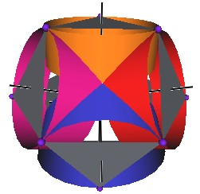
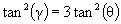
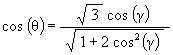

By
Robert W. Gray
180-4 Poplar St.
Rochester, NY 14620
Copyright, September 2002
09-29-2002
We develop a set of equations which describes the motion of a triangle and a vertex of the Jitterbug. The Jitterbug starts in the “opened” position of a Cuboctahedron (also called the Vector Equilibrium or VE) with 8 triangle faces, 6 square faces, and 12 vertices, and“closes” into an Octahedron position with 8 triangle faces and 6 vertices. (See Figure #1.)
The Jitterbug motion is visually complex but simple when you focus only on the motion of one of the 8 triangles. The motion of a triangle is simply a radial displacement plus a rotation around the radial displacement vector. Because the triangular faces do not change size as they move radially and rotate, the 3 vertices of a triangle are always on the surface of a cylinder. (See Figure #2.) The cylinder is axially aligned with the displacement vector. That is, with a line passing through the Octahedron’s (and VE’s) center of volume out through the triangle’s face center point. There are 4 axes of rotation (two opposite triangular faces per axis) so there are 4 fixed cylinders within which the triangles move.
The reason that the motion appears complex is because the Jitterbug is often demonstrated by holding the “top” and “bottom” triangles fixed while pumping the model. This causes the remaining 6 triangles to move radially in and out, rotate and orbit about the “up” and “down” pumping axis. By allowing all 8 triangles to move in the same way, that is, not fixing any of the 8 triangles, the motion is simplified.
Figure #1 Jitterbug Motion



Figure #2 Jitterbug Motion within cylinders.
We first note that since the 8 triangles of the Jitterbug during its motion do not change size, and since they move radially as they rotate, the 3 vertices of any of the 8 triangles are constrained to move on the surface of a cylinder.
Second, from the symmetry of the Octahedron and the Jitterbug, each of the vertices of the Jitterbug is constrained to move in a plane.
Thirdly, a plane cutting through a cylinder defines an ellipse.
Therefore, each of the vertices of the Jitterbug traverses a portion of an ellipse.
Figure #3 Path of a vertex
In Figure #3 we can see a portion of this ellipse as well as one triangle of the Jitterbug in the Octahedron and the VE position. The ellipse shown is in the YZ-plane. The surrounding cylinder is along the V-axis.
Note that since the Octahedron is centered at (0, 0, 0) then so too is the ellipse.
The equation of an ellipse, centered at the coordinate origin (0, 0, 0), is given by
where a = semimajor axis length and b = semiminor axis length.
Figure #4 Semimajor and semiminor axes lengths
From Figure #3, we see that the semimajor axis length, from the coordinate origin to the vertex of the VE positioned triangle, is the edge length of the Tetrahedron (and of the VE) defined by the VE triangle and the center of volume.
a = EL
Note that since the ellipse is defined on the surface of the cylinder, then the ellipse width must match the cylinder diameter. This means that the semiminor axis length is just the radius of the cylinder, which is the distance from the face center of a triangle to its vertex

We can now write the equation for the ellipse which a vertex of the Jitterbug will follow.
| (1) |

|
where EL is the edge length of the Octahedron, which is also the edge length of the VE.
The eccentricity of an ellipse is defined by the equation
Using the above values for a and b:
a = EL
we get
b2 / a2 = (1/3) / 1 = 1/3
so that
The coordinates for the 2 focus points are (0, ae) and (0, –ae) in the YZ-plane. These evaluate to

and
The usual motion of the Jitterbug consists of the vertices moving from the Octahedron to the VE position and back to the Octahedron position. Then only a portion of the ellipse is traversed by the vertices.
Figure #5 Jitterbug portion of ellipse
Figure #6 Orientation of the axes
Figure #6 shows the various axes and their orientations used in the following derivations.
It is important to note that there are two axes of rotations used in the derivations. The first axis is the V-axis shown in Figure #3 and Figure #6. It is the axis about which the Jitterbug triangle rotates. The second axis is the X-axis of Figure #6 and Figure #7. The X-axis rotates the ellipse radius (labeled “r” in Figure #7) around the ellipse. It is important to note that an angular of rotation g about the V-axis does not equal the same angular amount of rotation q about the X-axis.
g ¹ q
Figure #7 Orientation of ellipse and cylinder
We will shortly derive relations which will let us convert a Jitterbug’s triangle angular rotation g from the ellipse radius sweep angle q and visa versa.
(Note that I am using the term ellipse “radius” very loosely here. The ellipse does not have a radius. However, the word “radius” makes it easy to refer to a line segments with one end at the coordinate origin and the other end on the perimeter of the ellipse.)
Considering Figure #7, we have defined the ellipse to be in the YZ-plane. The cylinder has its axial symmetry axis along the V axis and the W axis of the cylinder is perpendicular to the V and to the Y axes. The left side of Figure #7 is rotated about the Z axis to get the right side of the Figure.
Note that both coordinate systems (X, Y, Z) and (W, Y, V) share the same Y-axis.
We now want to calculate the Z and Y component of the ellipse radius r, which has been rotated by the angular amount q about the X-axis (so it remains in the YZ-plane.)
From the ellipse equation above, we can write
| (2) | 3Y2 + Z2 = EL2 |
We note that
r2 = Y2 + Z2
and that
r cos( q ) = Z
so
r2 = Z2 / cos2( q )
This gives the equation
Y2 + Z2 = Z2 / cos2( q )
Y2 = Z2 / cos2( q ) - Z2
Using this in equation (2) and solving for Z2, we get
3 Z2 / cos2( q ) - 3Z2 + Z2 = EL2
Using this equation and equation (2), we can solve for Y

We need a relation relating q to g which is the angular amount a triangle is rotated about the V-axis.
The angle which the YZ-plane makes with the V axis is labeled a in Figure #3. This is the half-cone angle of the Tetrahedron in the VE. This angle is known to be
which makes the angle b (see Figure #3)
We then have

Now,
W = Z cos( b )
Using this in equation (2) we get
| (2) | 3Y2 + Z2 = EL2 |
Y2 = (1/3)EL2 – W2
With
tan( g ) = Y/W
so that
tan2( g ) = Y2/W2
we get


We can use a trigonometric identity
tan2(A) = (1/cos2(A)) – 1
to rewrite this as
(1 / cos2( g )) – 1 = 3( (1 / cos2( q )) – 1)
(1 / cos2( g )) – 1 = (3 / cos2( q )) – 3
1 / cos2( g ) = (3 / cos2( q )) – 2
1 / cos2( g ) = (3 / cos2( q )) – 2 cos2( q ) / cos2( q )
1 / cos2( g ) = (3 – 2 cos2( q )) / cos2( q )
cos2( g ) = cos2( q ) / (3 – 2 cos2( q ))

Solving for cos( q ), we get

We can then write Z as a function of the Jitterbug rotation angle g

We now calculate the position of the Jitterbug triangle along the V-axis. This is the axis around which a single triangle rotates and moves radially.
From Figure #7 we have
V = Z sin( b )
Which means
| (3) |

|
This equation gives the distance that the Jitterbug triangle is from the center of volume as it rotates around the V-axis. The angular range is – 60° £ g £ 60° , with g = – 60° is one Octahedron position, g = 0° is the VE position and g = 60° is the other Octahedron position.